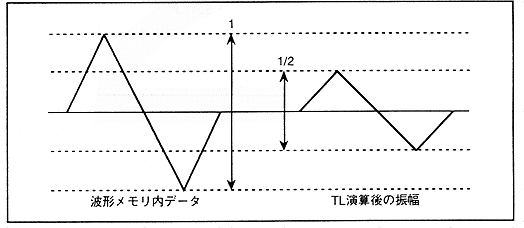

-48-24-12-6-3-1.5-0.8-0.4 = -95.7 [dB]
Table 4.18 TL, attenuation and waveform amplitude
| TL bit | bit 7 | bit 6 | bit 5 | bit 4 | bit 3 | bit 2 | bit 1 | bit 0 |
| TL attenuation | -48 | -24 | -12 | -6 | -3 | -1.5 | -0.8 | -0.4 |
| Amplitude ratio | 1/256 | 1/16 | 1/4 | 1/2 | 1/√2 | 1/4√2 | 1/8√2 | 1/16√2 |
| Real ratio (times) | 0.00391 | 0.06250 | 0.25000 | 0.50000 | 0.70711 | 0.84090 | 0.91700 | 0.95760 |
Also, if only bit 4 is set to "1B", the amplitude of the output waveform after TL calculation will be 1/2 of the amplitude in the waveform memory as shown in Figure 4.50.
Figure 4.50 Wave data of TL bit4 [==] 1
